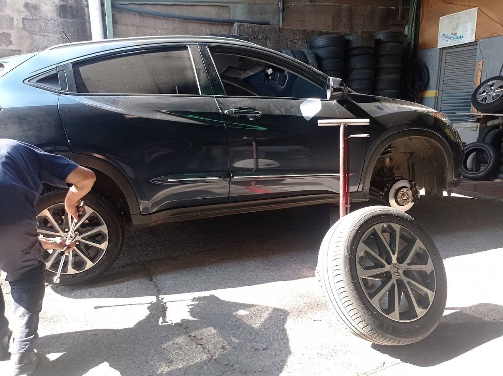
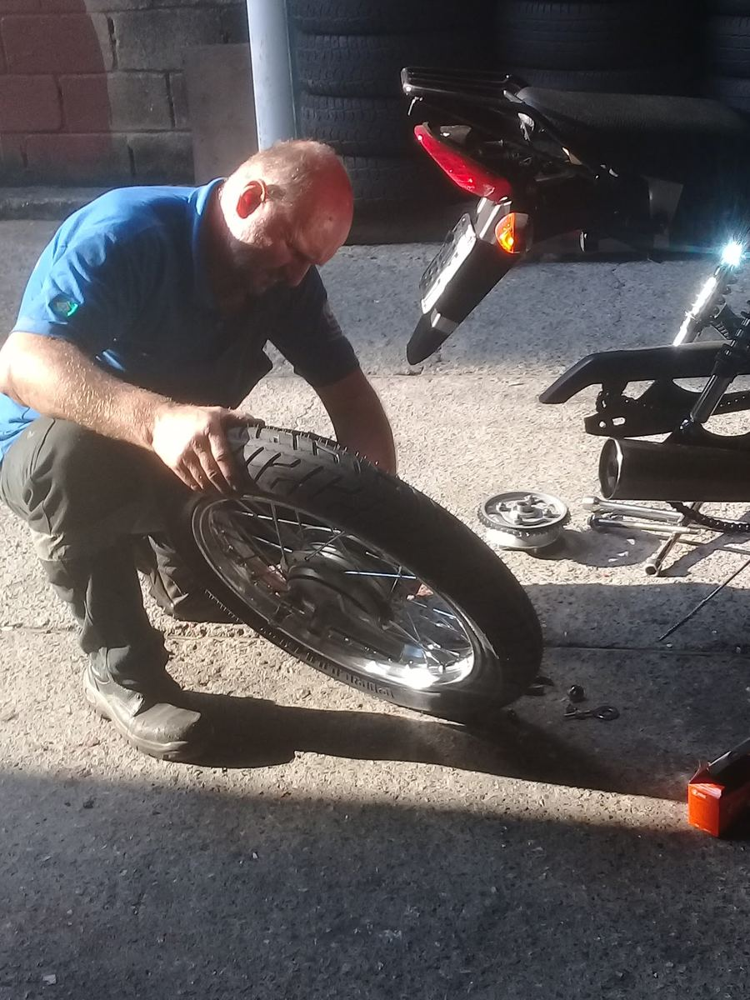
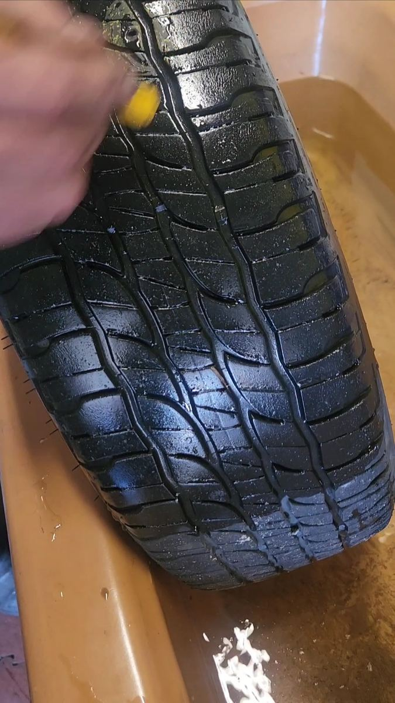
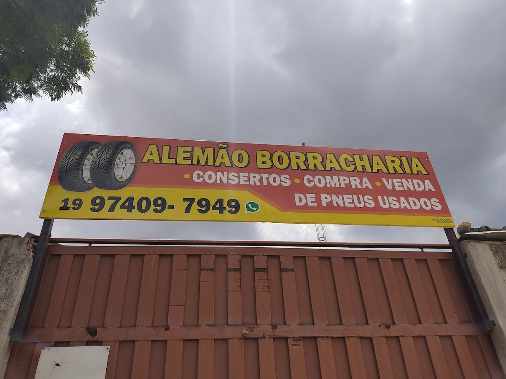

Furou? Resolve em poucos minutos no Alemão.
Carro, moto, caminhonete e até caminhão. Serviço rápido, honesto e sem empurrar o que você não precisa. Também compra e vende pneus usados.
4,7 ★ com 166 avaliações no Google



Serviços
O que a gente faz
Conserto de furo
Acha o vazamento na água e resolve na hora.
Troca e montagem
Carro, moto, caminhonete e caminhão.
Pneus usados
Venda de seminovos com preço bom.
Compramos seu pneu
Tem pneu parado? Traga para avaliar.
Orçamento rápido
Do que você precisa?
Marque e mande pelo WhatsApp. Se estiver parado na rua, marque a opção que a mensagem já vai como urgente.
1. Veículo
2. O que precisa
3. Situação
4,7 · 166 avaliações no Google
Rápido e honesto
"Resolveu o problema no meu pneu em poucos minutos e ainda passou bastante confiança. Se preocupam em ajudar sem tentar empurrar serviço desnecessário."Andreson · Google
"Extremamente solícitos e prestativos. Meus colaboradores tiveram um problema com o pneu do caminhão e prontamente os ajudaram."Cristiane · Google
"Serviço rápido, de alta qualidade e ótimos preços."Avaliação no Google

Onde fica
Av. Joaquim Payolla, 610 (fundos)
| Segunda a sexta | 8h às 18h |
| Sábado | 8h às 14h30 |
| Domingo | Fechado |
Jardim Nova Europa · Campinas (SP) · procure o portão com a placa amarela
WhatsApp (19) 97409-7949